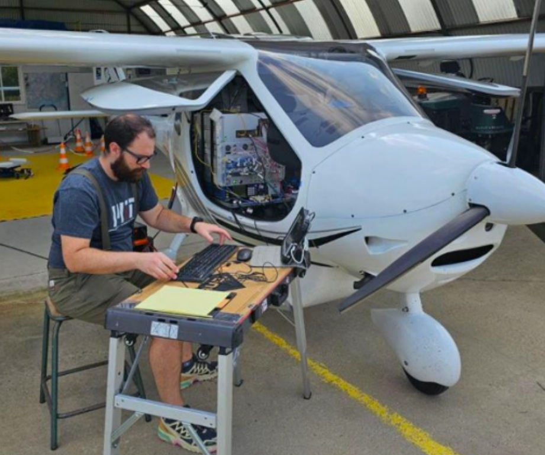
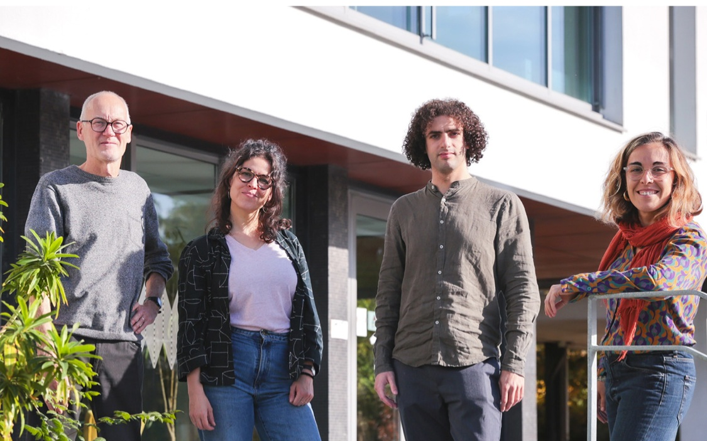
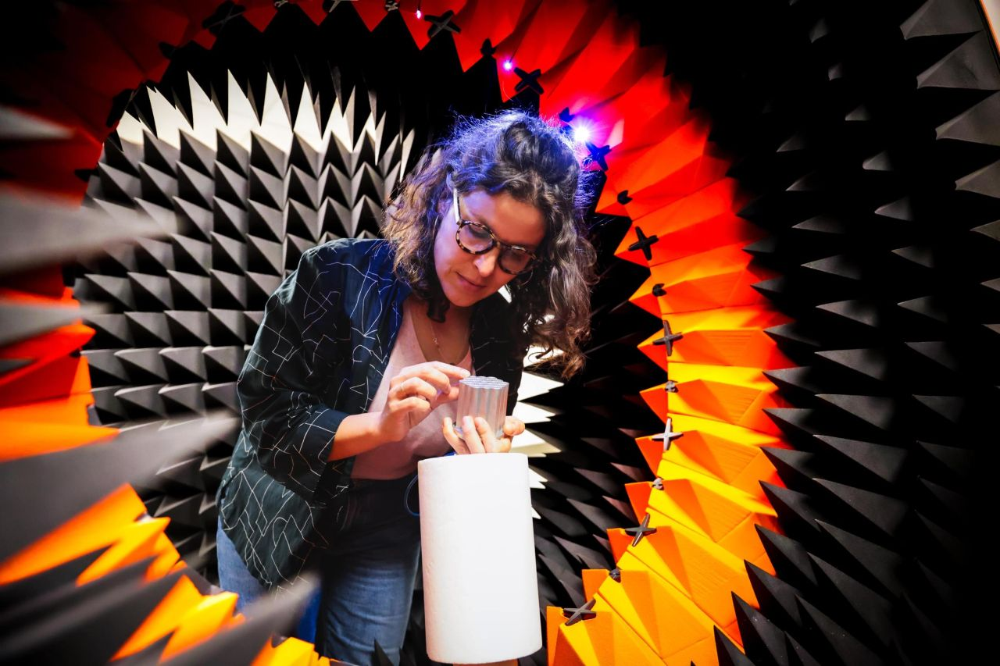
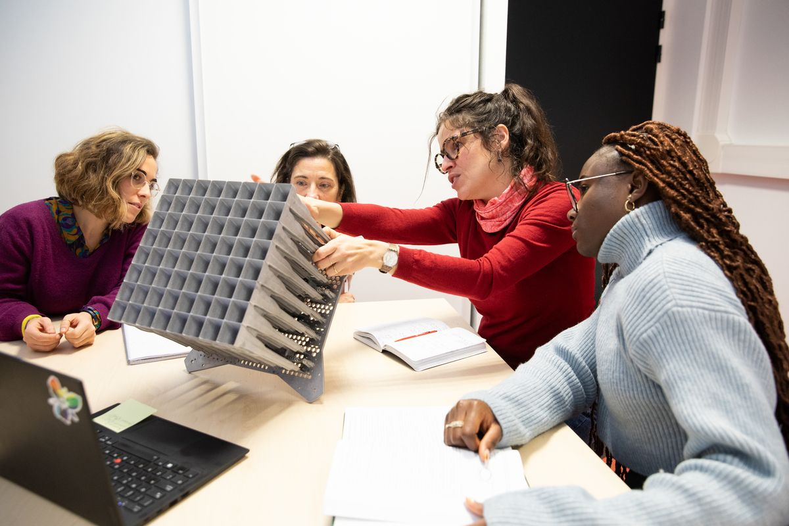
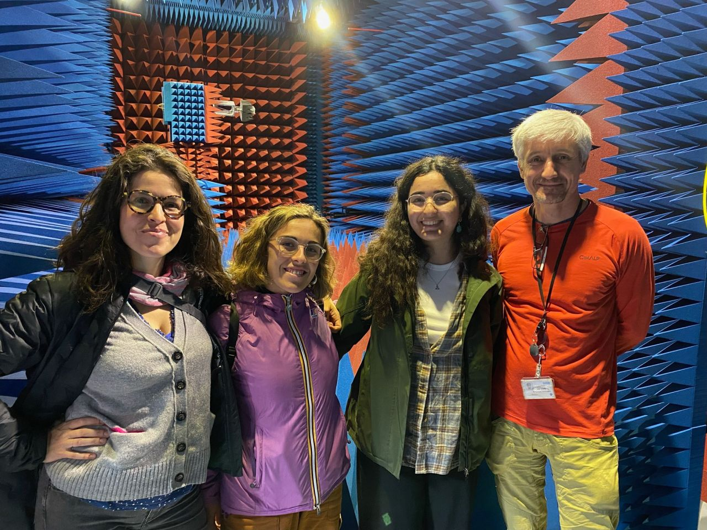
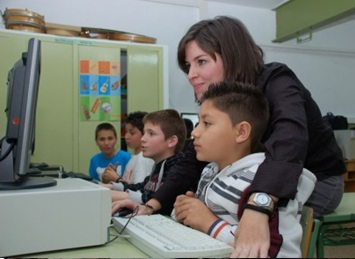
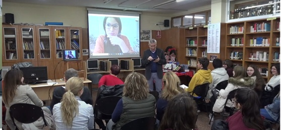
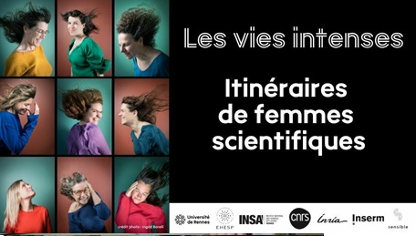
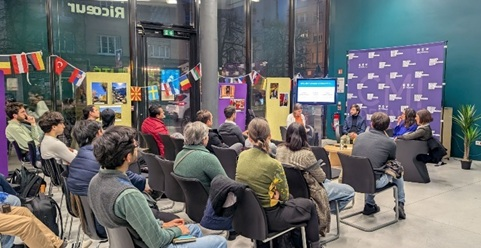
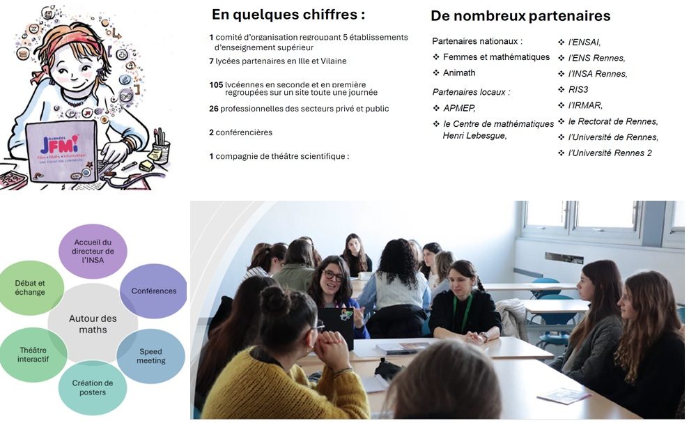

Des ondes électromagnétiques aux technologies innovantes pour l’espace et la Terre. From electromagnetic waves to innovative technologies for space and Earth.
Je me pose des questions. Comment concevoir des dispositifs qui restent utiles quand les besoins de la société changent ? Comment éviter que ces technologies ne restent entre les mains de quelques-uns ? Et comment former des ingénieurs capables de se poser ces questions-là ?
Je n’ai pas pris le chemin le plus rapide pour y répondre. J’avance en équipe, en essayant de rester consciente de ce que nous fabriquons, et pour qui.
I ask questions. How do we design devices that stay useful when society’s needs change? How do we keep these technologies from remaining in the hands of a few? And how do we train engineers who ask these questions themselves?
I haven’t taken the fastest route to answering them. I move forward as part of a team, trying to stay aware of what we are building, and for whom.
Je suis Professeure des Universités à l’INSA Rennes, membre de l’Institut Universitaire de France (IUF) et responsable de l’équipe SurfWAVE. Mon travail se situe à l’interface entre recherche fondamentale, innovation technologique et applications spatiales, avec un investissement fort dans l’innovation pédagogique et la transmission des sciences.
Les questions qui guident mon travail The questions that guide my work
Peut-on concevoir une technologie spatiale plus flexible, capable de s’adapter au cours du temps et d’être reconfigurée à distance, afin d’éviter son obsolescence, le redéploiement de nouveaux systèmes et les débris associés ? Dans chaque cas, mes réponses reposent sur des concepts physiques originaux et sur l’ingénierie des métamatériaux. Lire l’article NewSpace.
Can we build a more flexible space technology, able to adapt over time and to be reconfigured remotely, so as to avoid its obsolescence, the redeployment of new systems and the debris that comes with it? In each case, my answers rely on original physical concepts and on metamaterial engineering. Read the NewSpace article.
🌊 Peut-on intégrer plusieurs fonctionnalités dans un même dispositif ?
🌊 Can we integrate multiple functionalities in the same device?
🛰️ Si les antennes actives sont l’avenir du spatial, peut-on les rendre accessibles ? C’est comme demander que tous les continents puissent avoir une Rolls-Royce.
🛰️ If active antennas are the future of space, can we make them accessible? It is like asking that every continent be able to own a Rolls-Royce.
🌍 Que peut faire l’ingénierie des télécommunications pour l’observation de l’environnement ?
🌍 What can telecommunications engineering do for environmental observation?
🧊 Affronter la peur de la liberté. Il n’y a plus d’excuses pour être plus créatifs : sortons des solutions canoniques et allons vers la 3D, avec des formes jamais vues qui permettent de faire ce qui n’a jamais été fait.
🧊 Facing the fear of freedom. There are no more excuses not to be more creative: let us leave canonical solutions behind and go 3D, with never-before-seen shapes that make it possible to do what has never been done.
👩🏫 Comment forme-t-on des ingénieurs qui se posent ces questions ? C’est l’objet du projet d'innovation pédagogique TREMPLIN , et la raison pour laquelle j’explique aussi la lumière à des enfants de 4 à 6 ans.
👩🏫 How do we train engineers who ask these questions? That is what the TREMPLIN project in pedagogical innovation is about, and why I also explain light to children aged 4 to 6.
Activités à venir
Upcoming Activities
European Microwave Week 2026 — Conférencière invitée dans l’atelier « Current Trends in MMW and THz Components ».
European Microwave Week 2026 — Invited Lecturer at the workshop “Current Trends in MMW and THz Components”.
ESA Antenna Workshop at ESTEC — Présidente de session « New Technologies for Active Antennas ».
ESA Antenna Workshop at ESTEC — Session Chair for “New Technologies for Active Antennas”.
Actualités sélectionnées
Selected News
Pour comprendre d’où je parle To understand where I’m coming from
♀️ The Place I Want to Be — Invitée par l’éditrice de la rubrique Women in Engineering de IEEE Antennas and Propagation Magazine, pour une réflexion personnelle sur le métier de chercheuse, les rencontres et les valeurs qui donnent du sens à notre parcours.
♀️ The Place I Want to Be — Invited by the editor of the Women in Engineering column of IEEE Antennas and Propagation Magazine to share a personal reflection on being a researcher, the people who shape our journey and the values that give meaning to our work.
2026
EPFL — Séminaire scientifique invité, “From Research to Space: Experiences Connecting Academia and Industry in Europe”, autour des collaborations entre recherche académique et industrie dans le secteur spatial.
EPFL — Invited scientific seminar, “From Research to Space: Experiences Connecting Academia and Industry in Europe”, on collaboration between academia and industry in the space sector.

📡 HOMARDS — Water Radar — Publication dans IEEE Access sur un réseau d’antennes à ondes de fuite à double polarisation pour le radar aéroporté HOMARDS, développé avec le CNES, l’IFREMER et l’ONERA pour l’observation de l’eau.
📡 HOMARDS — Water Radar — Publication in IEEE Access on a dual-polarized leaky-wave antenna array for the HOMARDS airborne radar, developed with CNES, IFREMER and ONERA for water remote sensing.
👩🔬 Researchers at Kindergarten — Six ateliers de divulgation scientifique dans des écoles maternelles, autour de la lumière et des champs électriques et magnétiques, auprès d’enfants de 4 à 6 ans.
👩🔬 Researchers at Kindergarten — Six science outreach workshops in kindergartens, introducing children aged 4–6 to light and electric and magnetic fields.
2025

✨ Trophées Valorisation 2025 — Lauréate du prix Numérique – électronique, photonique, IA et cyber, pour des travaux sur des antennes intelligentes, modulables et reprogrammables à distance.
✨ 2025 Innovation Valorization Awards — Recipient of the Digital – Electronics, Photonics, AI and Cybersecurity Award, for research on smart, modular and remotely reconfigurable antennas.
📡 Dual-Polarized Spaceborne Phased Arrays — Réseaux d’antennes phasées à haute efficacité développés en collaboration avec l’ESA pour des applications spatiales en orbite basse.
📡 Dual-Polarized Spaceborne Phased Arrays — Highly efficient phased arrays developed in collaboration with ESA for low Earth orbit space applications.
Mon parcours My journey
Ingénieure en télécommunications formée à l’Université Polytechnique de Carthagène (Espagne), j’y ai soutenu ma thèse en 2012, sur les antennes à ondes de fuite (mention Cum Laude). J’ai ensuite fait un postdoctorat à l’EPFL (2012–2015), où j’ai découvert la collaboration industrielle et les contraintes des applications réelles, notamment avec l’ESA, RUAG Space et Dassault Aviation. J’ai rejoint l’INSA Rennes et l’IETR en 2015. Mon parcours est marqué par une forte mobilité, géographique et thématique, et par des collaborations internationales.
A telecommunications engineer trained at the Universidad Politécnica de Cartagena (Spain), I defended my PhD there in 2012, on leaky-wave antennas (Cum Laude). I then did a postdoc at EPFL (2012–2015), where I discovered industrial collaboration and the constraints of real applications, notably with ESA, RUAG Space and Dassault Aviation. I joined INSA Rennes and IETR in 2015. My path has been shaped by strong mobility, both geographical and thematic, and by international collaborations.
La recherche naît des questions Research starts with questions
Mes recherches portent sur le contrôle des ondes électromagnétiques et la conception d’antennes et de systèmes RF, avec un intérêt particulier pour les applications spatiales, le radar et l’observation de la Terre. Je cherche à concevoir des dispositifs multifonctionnels, capables d’harmoniser différentes applications au sein d’un même système et de s’adapter au cours du temps à l’évolution des besoins sociétaux. Je m’intéresse ainsi à une conception plus responsable des dispositifs et de leurs ressources, en m’appuyant sur de nouveaux concepts de la physique des ondes et des métamatériaux, ainsi que sur de nouvelles techniques de fabrication qui peuvent aussi contribuer à démocratiser l’utilisation de ces technologies. Ces travaux ont été menés en collaboration avec des partenaires académiques et industriels et ont donné lieu à plusieurs publications et brevets. Liste des publications .
My research focuses on electromagnetic wave control and the design of antennas and RF systems, with a particular interest in space, radar and Earth observation applications. I aim to design multifunctional devices that can bring different applications together within a single system and adapt over time to changing societal needs. I therefore explore more responsible approaches to the design and use of resources, drawing on new concepts in wave physics and metamaterials, as well as new manufacturing techniques that can also help democratize the use of these technologies. Our work is carried out in collaboration with academic and industrial partners and has led to publications and patents. Complete publication list .
Distinctions majeures Major recognitions
Voir toutes les distinctions View all awards
Axes de recherche Research themes
Contrôle intelligent des ondes Intelligent wave control
Peut-on intégrer plusieurs fonctionnalités dans un même dispositif ?
Can we integrate multiple functionalities in the same device?
Je développe des surfaces capables de contrôler les ondes électromagnétiques et d’apporter de nouvelles fonctionnalités aux antennes et systèmes RF : contrôle du faisceau, de la polarisation, du filtrage fréquentiel ou encore amélioration des performances de rayonnement. Ces travaux s’appuient sur la physique des structures périodiques et quasi-périodiques et sur les concepts de métamatériaux, avec l’objectif de concevoir des dispositifs multifonctionnels et adaptables. Ces travaux sont menés en collaboration avec Thales Alenia Space, le CNES, l’Universidad de Granada et l’Universidad de Sevilla.
I develop surfaces that can control electromagnetic waves and bring new functionalities to antennas and RF systems, including beam control, polarization manipulation, frequency filtering and improved radiation performance. These studies build on the physics of periodic and quasi-periodic structures and on metamaterial concepts, with the aim of designing multifunctional and adaptable devices. These concepts are developed in collaboration with Thales Alenia Space, CNES, Universidad de Granada and Universidad de Sevilla.
Travaux sélectionnés
Selected work
Antennes spatiales & systèmes RF Space antennas & RF systems
Si les antennes actives sont l’avenir du spatial, peut-on les rendre accessibles ?
If active antennas are the future of space, can we make them accessible?

Mesure d’une antenne active dans la Starlab du laboratoire.
Measuring an active antenna in the laboratory’s Starlab.

Présentation à des collègues du laboratoire d’un prototype d’antenne pour le satellite HummingSat de SWISSto12, développé avec l’Université de Trento dans le cadre d’un projet ESA.
Presenting to colleagues from the laboratory an antenna prototype for SWISSto12’s HummingSat satellite, developed with the University of Trento within an ESA project.
Je développe des antennes et systèmes RF pour des charges utiles spatiales flexibles, capables d’adapter leurs faisceaux et leurs fonctionnalités aux besoins de la mission. Ces travaux portent notamment sur les réseaux phasés, les lentilles multibeams et les antennes leaky-wave, avec un intérêt particulier pour les architectures destinées aux liaisons intersatellites. Je cherche à atteindre cette flexibilité tout en limitant la complexité des systèmes, la consommation d’énergie et le nombre de circuits électroniques nécessaires, afin de contribuer à démocratiser l’accès à ces technologies. Cette approche s’appuie sur de nouveaux concepts de guides d’onde et d’architectures électromagnétiques à faibles pertes. Ces travaux sont menés en collaboration avec l’ESA, le groupe Thales et le partenaire industriel TeraSi, ainsi qu’avec les équipes académiques de CNIT–ELEDIA à Trento.
I develop antennas and RF systems for flexible space payloads, capable of adapting their beams and functionalities to mission needs. This work includes phased arrays, multibeam lenses and leaky-wave antennas, with a particular interest in architectures for inter-satellite links. I aim to achieve this flexibility while limiting system complexity, power consumption and the number of required electronic circuits, thereby contributing to making these technologies more accessible. This approach relies on new concepts in waveguides and low-loss electromagnetic architectures. These activities are carried out in collaboration with the European Space Agency (ESA), the Thales Group and industrial partner TeraSi, as well as CNIT–ELEDIA in Trento.
Travaux sélectionnés
Selected work
Observation de la Terre & antennes pour radars contraints Earth observation & antennas for constrained radar systems
Que peut faire l’ingénierie des télécommunications pour l’observation de l’environnement ?
What can telecommunications engineering do for environmental observation?
Je conçois des antennes spécifiquement adaptées à des scénarios radar fortement contraints, notamment pour l’observation de la Terre. Dans ces applications, les contraintes de compacité, de masse, d’intégration et d’autonomie énergétique sont particulièrement importantes. Mon travail consiste à développer des architectures antennaires capables de répondre à ces contraintes tout en conservant les performances électromagnétiques nécessaires aux instruments. Ces recherches sont menées en interaction étroite avec les équipes qui développent les systèmes radar et les missions d’observation. Ces travaux sont menés en collaboration avec le CNES, l’IFREMER, l’ESA, l’ONERA et Géosciences Rennes.
I design antennas specifically tailored to highly constrained radar scenarios, particularly for Earth observation. In these applications, compactness, mass, integration and energy autonomy are key constraints. My work focuses on developing antenna architectures that meet these requirements while maintaining the electromagnetic performance required by the instruments. This research is carried out in close interaction with teams developing radar systems and Earth observation missions. We strongly collaborate with CNES, IFREMER, the European Space Agency (ESA), ONERA and Géosciences Rennes on this subject.
Travaux sélectionnés
Selected work
Co-design RF et impression 3D Co-design RF & 3D printing
Affronter la peur de la liberté : sortons des solutions canoniques et explorons des formes 3D jamais vues.
Facing the fear of freedom: let us leave canonical solutions behind and explore never-before-seen 3D shapes.

Mesures en chambre anéchoïque pour le PFE de Rema Ahmid, encadré avec Lisa Berretti : des réseaux phasés pour le spatial exploitant les géométries 3D et la fabrication additive.
Anechoic chamber measurements for Rema Ahmid’s master’s thesis, supervised with Lisa Berretti: phased arrays for space exploiting 3D geometries and additive manufacturing.
L’impression 3D a été pour moi une véritable source d’enthousiasme : elle ouvre un degré de liberté considérable dans la conception des antennes et des composants RF. Je travaille sur le co-design de l’antenne et de sa fabrication, en considérant dès le départ les possibilités mais aussi les spécificités du procédé. La fabrication additive est ainsi devenue un sujet de recherche à part entière, qui nécessite de croiser l’électromagnétisme avec la mécanique et la thermique pour transformer des géométries nouvelles en dispositifs réellement fabricables et performants.
3D printing has been a great source of excitement for me: it opens up a remarkable degree of freedom in the design of antennas and RF components. I work on the co-design of the antenna and its manufacturing process, considering from the outset both the possibilities and the specificities of the technology. Additive manufacturing has therefore become a research topic in its own right, requiring electromagnetics to be combined with mechanical and thermal engineering to turn new geometries into devices that are both manufacturable and high-performing.
Ces travaux sont menés en collaboration avec SWISSto12, CSEM, l’Université de Pérouse et Tyndall National Institute à Cork.
This research is carried out in collaboration with SWISSto12, CSEM, the University of Perugia and Tyndall National Institute in Cork.
Travaux sélectionnés
Selected work
Groupe SurfWAVE SurfWAVE Team
Je dirige depuis 2021 l’équipe SurfWAVE, née en 2019. Nous l’avons fait grandir ensemble, et j’ai pris soin de la faire grandir d’une certaine manière : en travaillant réellement ensemble, avec bienveillance envers les jeunes chercheurs et envers nous-mêmes.
Ce qui compte le plus à mes yeux n’est pas la production, mais la construction : aider chacun à se forger un cerveau de chercheur, capable de penser et de décider de façon autonome. C’est plus lent, mais c’est aussi ce qui reste. Concrètement, je demande à mes doctorants de superviser des étudiants de master, et à mes post-docs de m’aider à encadrer des doctorants : cela favorise l’empathie et l’auto-évaluation. L’équipe travaille autour des ondes électromagnétiques, des surfaces périodiques et quasi-périodiques, et de la conception de dispositifs pour des applications spatiales, radar et télécommunications.
I have led the SurfWAVE team since 2021; it was created in 2019. We have grown it together, and I have taken care to grow it in a particular way: truly working together, with kindness towards the early-career researchers and towards ourselves.
What matters most to me is not output but construction: helping each person build a researcher’s mind, able to think and decide independently. It is slower, but I also believe it is what lasts. In practice, I ask my PhD students to supervise master’s students, and my postdocs to help me supervise PhD students: this fosters empathy and self-assessment. The team works on electromagnetic waves, periodic and quasi-periodic surfaces, and the design of devices for space, radar and telecommunications applications.
Membres de l’équipe Team members


Lise Trégloze
Ingénieure pédagogique · Chercheuse CREAD associée Pedagogical Engineer · Associate Researcher at CREADAnciens membres Former members
Engagements scientifiques Scientific service
Comités de programme et conférences Programme committees and conferences
Égalité et représentation Equality and representation
Évaluation, jurys et relecture Evaluation, committees and peer review
Éducation et divulgation Education and outreach
Pour moi, la recherche, l'enseignement et le dialogue avec la société sont indissociables. La recherche nourrit mon enseignement, l'enseignement nourrit ma recherche, et tous deux trouvent leur prolongement dans des actions destinées à partager les connaissances au-delà du monde académique.
To me, research, teaching, and engagement with society are inseparable. Research enriches my teaching, teaching enriches my research, and both extend beyond academia through activities that share knowledge with society.
Divulgation scientifique Science outreach
Tout au long de ma carrière, j’ai été impliquée dans des initiatives de divulgation scientifique et de promotion des carrières scientifiques. Entre 2009 et 2011, j’ai collaboré au programme « Scientifiques à l'école » du Conseil Régional de l’Éducation de Murcie, en organisant quatre interventions en école primaire pour éveiller l’intérêt des jeunes pour les sciences et les technologies.
Throughout my career, I have been involved in science outreach initiatives and activities promoting scientific careers. Between 2009 and 2011, I collaborated with the « Scientifiques à l'école » programme of the Regional Council of Education of Murcia, organizing four interventions in primary schools to encourage young people's interest in science and technology.
De 2018 à 2021, j’ai animé à trois reprises le séminaire « Les femmes et la science, yes we can ! » dans des lycées espagnols, pour encourager les adolescentes à envisager des carrières scientifiques et à dépasser les stéréotypes de genre.
From 2018 to 2021, I delivered the seminar « Les femmes et la science, yes we can ! » three times in Spanish high schools, encouraging young women to consider scientific careers and challenge gender stereotypes.
Ces dernières années, j’ai renforcé mon engagement dans des actions de sensibilisation. En 2024 et 2025, j’ai participé à plusieurs initiatives visant à promouvoir les carrières scientifiques auprès des jeunes et à encourager la participation des femmes dans ce domaine, notamment la « Journée des Filles et Maths : une équation lumineuse », l’exposition « Les vies intenses » et l’initiative « Chiche : une scientifique, une classe ! ».
In recent years, I have further strengthened my involvement in outreach activities. In 2024 and 2025, I participated in several initiatives promoting scientific careers among young people and encouraging women to pursue science, including « Journée des Filles et Maths : une équation lumineuse », the « Les vies intenses » exhibition, and « Chiche : une scientifique, une classe ! ».





TREMPLIN · Innovation pédagogique TREMPLIN · Educational innovation
Comment forme-t-on des ingénieurs qui se posent ces questions ?
How do we train engineers who ask these questions?
TREMPLIN est un projet d’innovation pédagogique financé par IRIS-E que je porte avec Rozenn Texier Picard (professeure de Mathématiques Appliquées à l’ENS Rennes) et Clément Mabi (directeur du laboratoire de sociologie LFPC) comme co-porteurs, et Lise Trégloze, chercheuse en sciences de l’éducation, recrutée dans le projet comme ingénieure pédagogique. C’est un projet transformateur et multidisciplinaire qui me tient à cœur. Il souhaite créer une communauté d’enseignants-chercheurs, d’étudiants et d’associations locales, pour expérimenter dans un espace sécurisé, avec l’objectif de transformer les pratiques en école d’ingénieurs afin d’intégrer la transition socio-environnementale.
TREMPLIN is a pedagogical innovation project funded by IRIS-E, which I lead with Rozenn Texier Picard (Professor of Applied Mathematics at ENS Rennes) and Clément Mabi (Director of the LFPC Sociology Laboratory) as co-leaders, and Lise Trégloze, a researcher in education sciences, recruited for the project as a pedagogical engineer. It is a transformative and multidisciplinary project that matters deeply to me. It aims to create a community of teacher-researchers, students, and local associations, to experiment in a safe space, with the goal of transforming practices in engineering schools to integrate the socio-environmental transition.
Contexte et objectifs
Context and objectives
Cinq axes de travail
Five areas of work


Researchers & Roosters · Séminaires et échanges scientifiques Researchers & Roosters · Research seminars and exchanges
Un cycle de rencontres et de séminaires pour faire vivre les échanges au sein du collectif de recherche. Certains séminaires sortent volontairement de nos thématiques : en janvier 2023, nous avons parlé de créativité, d’optimisme et d’épanouissement au travail.
A series of meetings and seminars bringing the research community together. Some seminars deliberately step outside our research topics: in January 2023, we talked about creativity, optimism and fulfilment at work.


Interventions en maternelle Kindergarten outreach
Six ateliers dans des écoles maternelles, pour faire découvrir aux plus jeunes (4 à 6 ans) la lumière et les champs électriques et magnétiques.
Six workshops in kindergartens, introducing children aged 4 to 6 to light and to electric and magnetic fields.
Scientist at Kindergarten
03/07/2026 · Oscar Leroux
.png)
 - English.png)
.png)
 - English.png)
.png)
.png)
.png)
.png)
.png)
.png)
.jpg)
.jpg)
.jpg)
.jpg)
Fiches pédagogiques — écoles maternelles
Educational Cards — Kindergarten
Nos différentes fiches pédagogiques
Our Educational Resources
Lasers & Ballons Lasers & Balloons
Optronique & Thermodynamique : Absorption thermique vs réflexion lumineuse.
Optronics & Thermodynamics: Thermal absorption vs reflection.
Prisme & Ombres Colorées Prism & Colored Shadows
Optique Géométrique : Décomposition spectrale par prisme K9 et synthèse RVB.
Geometric Optics: Light dispersion via a K9 prism and RGB color mixing.
Le Train Magnétique The Magnetic Train
Électromagnétisme : Moteur homopolaire et Force de Laplace.
Electromagnetism: Homopolar motor utilizing Laplace force.
Force Électrostatique Electrostatic Force
Triboélectricité : Arrachement d'électrons et lévitation électrostatique.
Triboelectricity: Electron transfer causing electrostatic levitation.
Téléphone à Lumière Light Telephone
Optoélectronique : Modulation audio d'une LED haute vitesse (Li-Fi).
Optoelectronics: Audio modulation of a high-speed LED (Li-Fi).
Filtres & Polarisation Filters & Polarization
Biréfringence & Photoélasticité : Extinction par filtres croisés à 90°.
Birefringence & Photoelasticity: Light extinction via 90° crossed polarizers.
⚙️ Manuels d'installation
⚙️ Setup Manuals
Guides pas à pas pour les démonstrateurs et l'alignement des équipements.
Step-by-step guides for technical setup and equipment alignment.